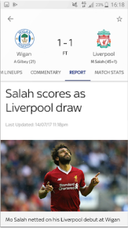

Get started
User-friendly Interface
The in-game goal clips from every Premier League match are available to Guardian TV customers with a Guardian subscription.
So, if you’re not a subscriber, now’s the time to make that savvy call. If that’s a step too far for you, you can still watch loads of firecracker Premier League action as long as you sign in with a free Guardian iD.
Learn more
Features That Will Tailor Your Experience
-
Video highlights for every Premier League and English Football League game
-
Notifications for your teams, including in-game goal clips and Premier League match highlights for Sky TV subscribers with Guardian
-
Brand new video section including dedicated areas for your chosen team, trending video, Premier League, Football league and other major leagues
-
Match pages showing live scores, commentary, team line-ups and enhanced match stats to keep you up-to-date on all the action
-
The new picture in picture video mode means you can watch goals, manager interviews and more whilst using other areas of the app – so you don’t need to miss any of the action
-
The new picture in picture video mode means you can watch goals, manager interviews and more whilst using other areas of the app – so you don’t need to miss any of the action